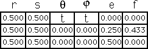
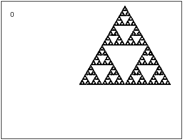

| For the equilateral gasket rules, let t range from 0 to 360 in steps of 10°. |
| Note the lower left corner (both blues) makes one complete rotation, the lower left corner of the lower left corner (dark blue) makes two complete rotations. |
| The lesson here is that each subpiece is viewed relative to the larger part. |
| The dark blue is the lower left corner of both blues, so makes one rotation relative to both blues. |
|  |  |